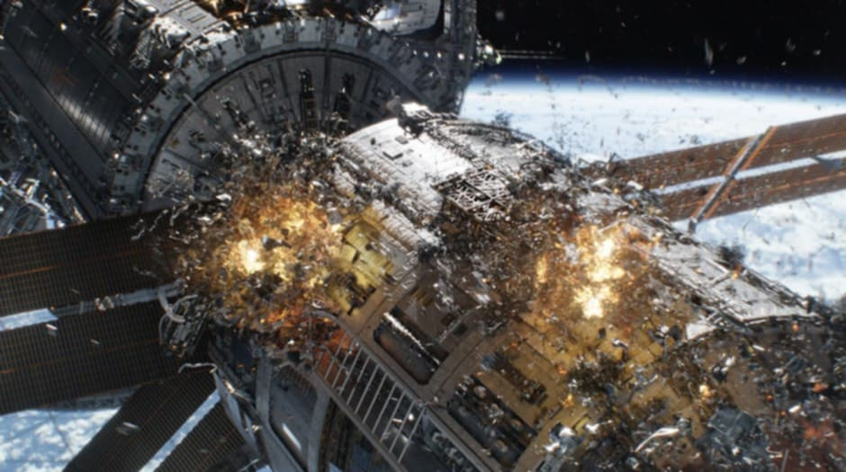
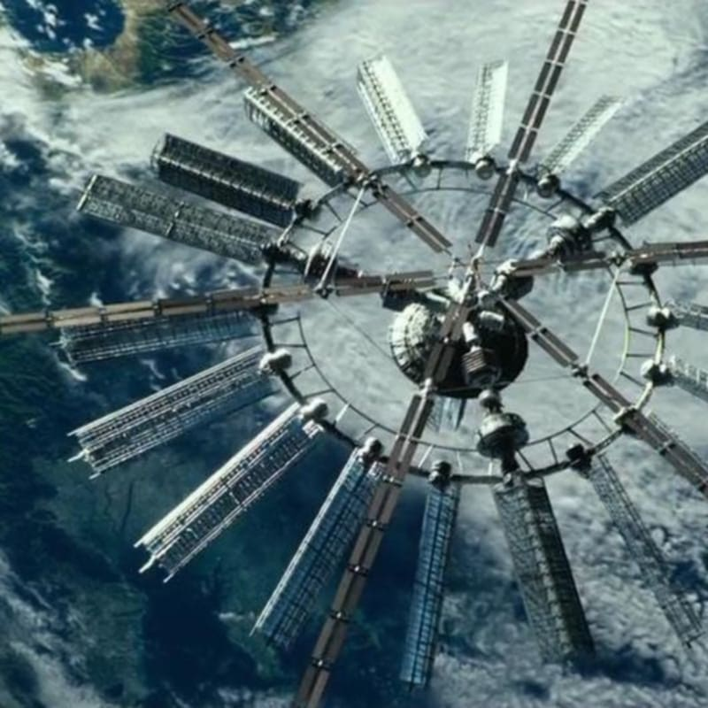
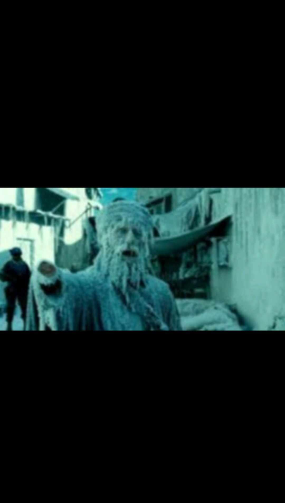
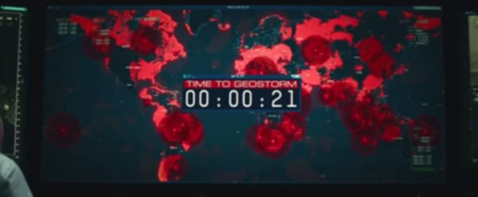

Nishihiro Chesler Suller
9-GOMBURZA
GEOSTORMARTICLE
"Geostorm" is a 2017 science-fiction disaster film directed by Dean Devlin. The movie features Gerard Butler as Jake Lawson, a satellite designer tasked with saving the planet from a catastrophic storm caused by malfunctioning weather-controlling satellites. The plot combines themes of global climate crises, conspiracy, and high-stakes action.
Critics largely panned the film, citing its lackluster execution despite an ambitious premise. While the film aimed to address climate change through futuristic technology, it often leaned into over-the-top disaster clichés. The visual effects, though ambitious, were criticized for being unmemorable compared to other disaster movies like The Day After Tomorrow. The story's conspiracy subplot and character development also failed to resonate with audiences.
Despite its flaws, Geostorm explores an intriguing concept of global cooperation in managing Earth's climate, which is worth considering in today's environmental context. It remains a notable attempt at merging sci-fi with disaster genres.
1.
2.
3.4.
5.
